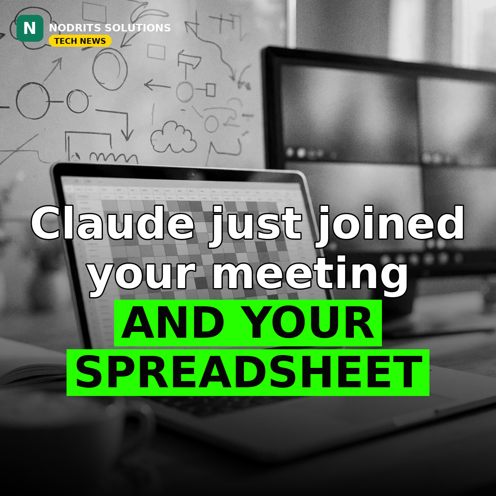

Claude Just Walked Into Your Office — Meetings, Sheets and Whiteboards

Claude just walked into your office. On November 10, 2026, Anthropic unveiled a workplace suite that puts its AI assistant inside meetings, spreadsheets and whiteboards — a direct challenge to Microsoft 365 and Google Workspace, announced the same week Anthropic's IPO roadshow began.
What happened
Four tools launched at a company event in San Francisco. Claude Meetings (beta, Team and Enterprise plans) adds Claude to a Google Meet call as a visible participant: it follows the conversation, drafts plans and timelines, answers questions in the meeting chat, pulls data from connected work apps, and saves notes and action items to claude.ai after the call. It will not join calls with external guests unless an admin allows it, and leaves automatically if an unapproved guest appears. Claude Sheets (beta, paid plans) is a native spreadsheet app — ask for a campaign tracker or hiring budget and Claude builds a working multi-tab workbook with formulas, formatting and drop-down menus. Claude Whiteboards (beta, paid plans) is a shared board for brainstorming with Claude. Claude Data, formerly Claude Dashboards, is now generally available on all paid plans. Anthropic also announced interactive connectors letting Adobe, Atlassian and HubSpot apps run inside Claude. Anthropic product leader Nicholas Lin called Sheets 'fairly basic', saying it is not meant for advanced financial modeling. Bloomberg reported Anthropic's annualized revenue run rate reached $81 billion as of October 31, up $10 billion from late September.
Why it matters
The AI race has moved into the office. Chatbots answered questions; now every major lab wants to own the documents, meetings and spreadsheets where work actually happens. Anthropic is going from a tool engineers love to a suite office workers live in — and it is doing it while competing with two of its own biggest backers, Microsoft and Google. The winner will not be the smartest model, but the one that sits closest to the work.
What it means for you
If your clients run on spreadsheets and meetings, AI is about to sit in both. Teams should test whether an AI participant in calls saves real time or just adds another voice — and set the rules early: who can invite it, what data it can see, and where the notes go. For freelancers and agencies, the practical move is simple: learn to build trackers, budgets and meeting workflows with these tools before your clients ask you to.
The Nodrits take
Claude now joins your meetings, builds your spreadsheets and runs your whiteboards. Is an AI colleague in every meeting a productivity win — or the end of the meeting as a human space? Tell us in the comments on today's post.
Need a website, SaaS product or AI workflow built right?
Nodrits Solutions designs, develops and automates for businesses in Pakistan, the USA, UK, UAE and Saudi Arabia.
Talk to Nodrits →Sources: Bloomberg via PYMNTS (November 10, 2026); TechCrunch (November 10, 2026); The Verge (November 10, 2026); Anthropic announcement. The $81 billion revenue run rate is as Bloomberg reported it; Claude Meetings works with Google Meet at launch, with other platforms expected later.. Published November 11, 2026.